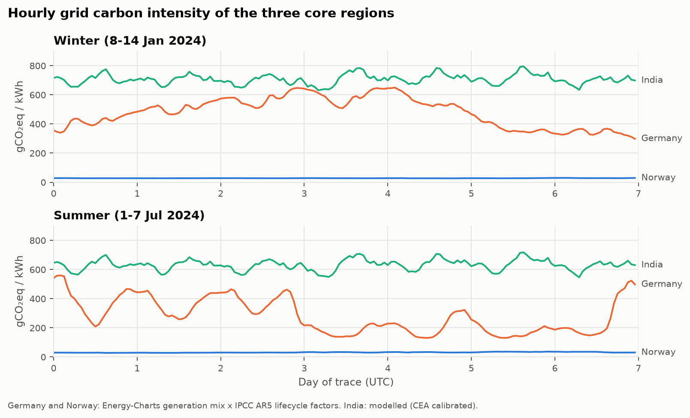
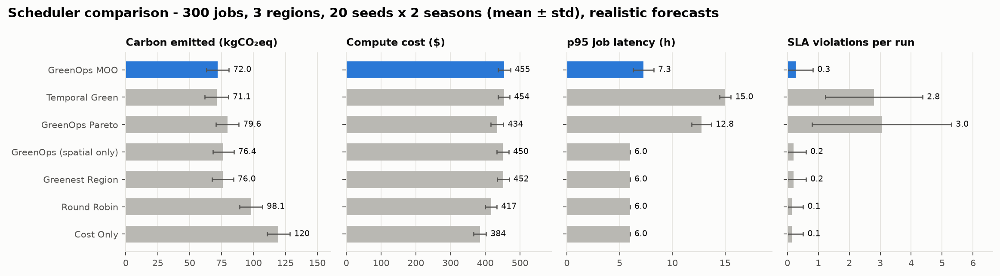
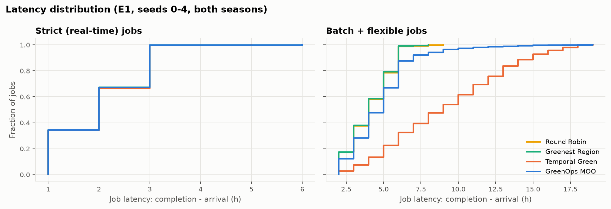
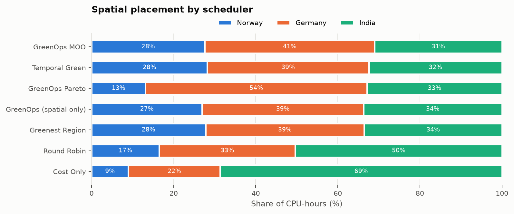
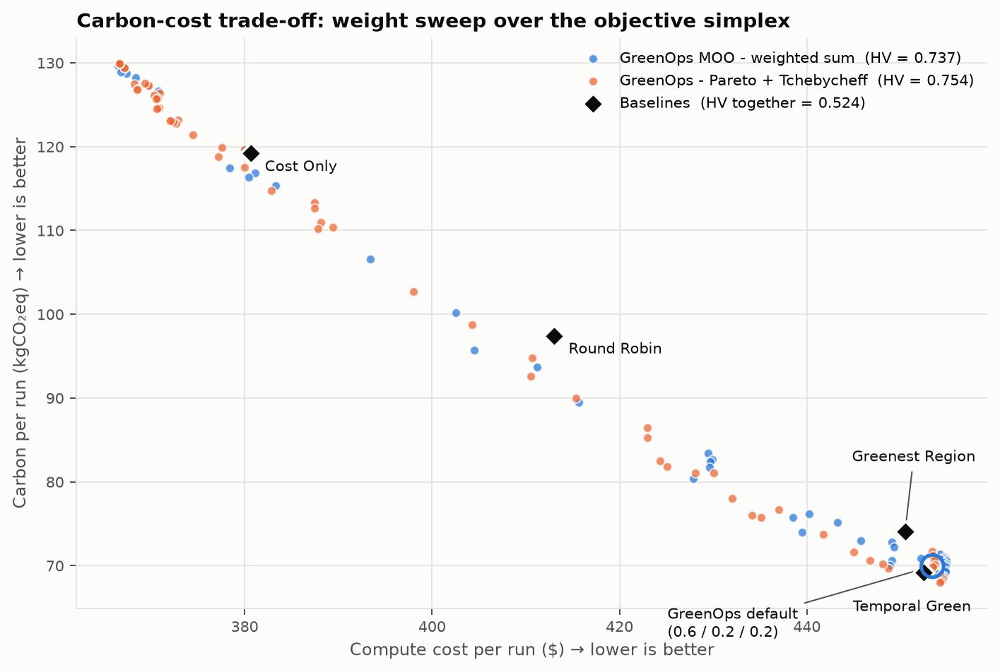
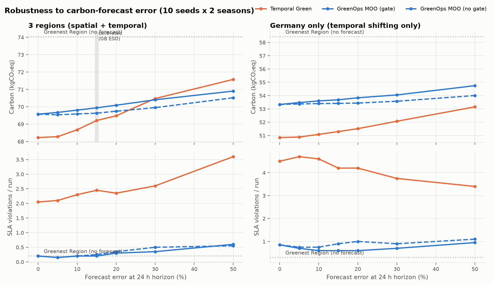
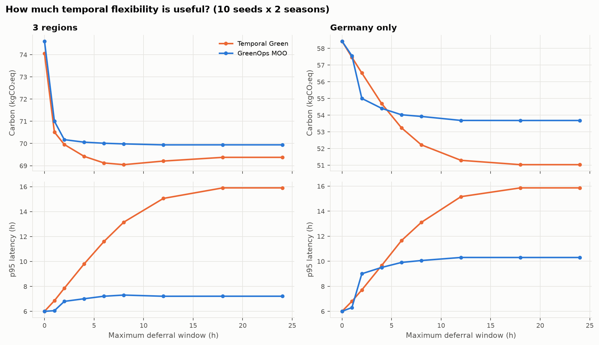
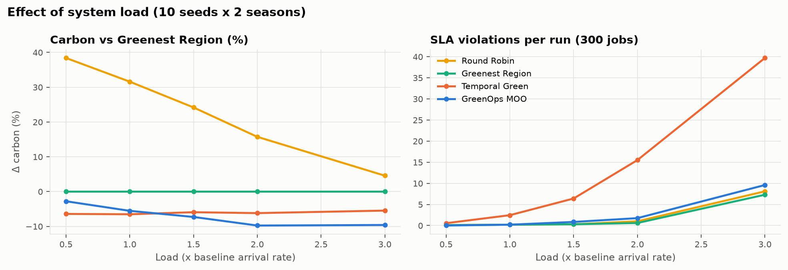

Cloud data centres are a fast-growing source of electricity demand. Conventional workload schedulers optimise execution time, resource availability and cost, and ignore the carbon intensity of the electricity that powers each job. Because carbon intensity varies substantially across regions and across the hours of a day, the same workload can produce very different emissions depending on where and when it runs. This project designs, implements and evaluates GreenOps, a multi-objective carbon-aware scheduler for geo-distributed clouds. GreenOps combines spatial shifting (routing a job to a cleaner region) with forecast-aware temporal shifting (deferring a flexible job to a cleaner hour). It jointly trades off forecast carbon emissions, compute cost and SLA risk, while treating deadlines, budgets and data-residency rules as hard constraints.
The system is evaluated in a SimPy discrete-event simulator driven by real historical carbon-intensity traces for January and July 2024. The traces are derived from the generation mix of the German, Norwegian, French and Polish grids, from National Grid ESO data for Great Britain, and from a model calibrated to Indian CEA data. The carbon forecast error is calibrated against real grid-operator forecasts. Across 20 random seeds and two seasons (300 heterogeneous jobs per run), GreenOps reduces emissions by 26.8 % compared with carbon-agnostic Round Robin and by 5.3 % compared with a greedy greenest-region scheduler (p < 0.001), at a cost increase of 0.65 %. It comes within 1.2 % of an aggressive carbon-greedy temporal scheduler, with 90 % fewer SLA violations and roughly half the tail latency. GreenOps degrades less than the greedy scheduler under forecast error, and its advantage grows with system load. A weight sweep traces a carbon–cost Pareto frontier whose hypervolume (0.74–0.75) clearly exceeds that of all baselines combined (0.52). The evaluation also characterises the practical limits of shifting: most of the temporal benefit comes from deferrals of only 2–4 hours, and spatial shifting dominates whenever a very clean region has free capacity. This agrees with the critique of Acun et al. [1]. A second evaluation replays about 45,000 real jobs per run from the Alibaba 2018 cluster trace, with data-transfer costs and two published baselines. There, GreenOps has the fewest SLA violations of all policies (0.5 %), while a forecast-free threshold policy reaches 6–9 % lower carbon at 7.6× the violations.
Cloud infrastructure accounts for a significant and growing share of global electricity consumption. Scheduling decisions about where and when a workload executes directly determine how much of that electricity comes from carbon-intensive sources. Conventional schedulers, such as Kubernetes' default bin-packing scheduler, cloud autoscalers and HPC batch systems, are built around execution time, resource availability and monetary cost. Carbon intensity, the mass of CO2-equivalent emitted per kWh consumed, is not part of the decision.
Carbon intensity is far from static. The real traces used in this project show that, over the same hours of January 2024, the Norwegian grid (mainly hydro) averaged 28 gCO2eq/kWh while the Polish grid (mainly coal) averaged 586. Over the same periods, the German grid ranged between 130 and 650 g/kWh, often moving by more than 300 g/kWh within a single day as wind and solar output rose and fell. The same job, with the same code and resource footprint, can therefore emit more than twenty times as much CO2 depending only on its placement and timing.
Existing cloud scheduling approaches do not jointly account for carbon intensity, compute cost and SLA deadlines when making placement and timing decisions. Approaches that consider carbon usually optimise it in isolation, for example by always routing to the currently greenest region, and ignore the cost and latency consequences. Most also assume perfect knowledge of future carbon intensity. This project investigates whether a scheduler can treat carbon as a first-class objective alongside cost and SLA compliance, remain robust to imperfect forecasts, and still respect strict deadlines.
The work is simulation-based. It models six regions: India, Germany and Norway form the core set, and France, Poland and Great Britain extend it. Carbon traces are hourly over two four-week periods. Workloads are synthetic but heterogeneous (strict real-time, deadline-bound batch, and flexible jobs) with budgets and data-residency constraints. Integration with real cloud provider APIs is outside the scope of this project.
The interim report assessed the project at about 50 % complete, with large-scale validation, historical carbon traces, forecast-uncertainty analysis and Pareto evaluation still pending. All of these items are now complete (Table 4.1). In the process, several simulator defects were found and fixed (Section 4.3), so the preliminary five-job numbers have been re-run on the corrected simulator.
Twenty papers were surveyed across eight research threads (Table 2.1). Temporal shifting was popularised by Wiesner et al. [17], who showed that deferring delay-tolerant jobs to low-carbon periods reduces emissions, with gains that depend on the region and the degree of flexibility. Spatial and geo-distributed load balancing goes back to carbon-aware load balancing for geo-distributed services [20] and has been revisited for serverless functions [16,18] and edge environments [2,3]. Industrial deployments shape the time-varying capacity of datacentres using carbon forecasts [14]. CarbonScaler [15] exploits workload elasticity, and Ecovisor [19] exposes a virtual energy system to applications. Acun et al. [1] systematically analyse the limits of both forms of shifting. They find that much of the potential is captured by simple policies, that spatial shifting is limited by capacity and latency constraints, and that the benefit of temporal shifting saturates quickly. Sukprasert et al. [4] extend spatio-temporal shifting to water and land-use footprints. Lechowicz et al. [12] give competitive online algorithms for spatio-temporal allocation with deadlines, and forecast uncertainty is addressed with distributionally robust optimisation in [11].
| Research thread | Focus |
|---|---|
| Carbon-aware scheduling | Placing or timing workloads to minimise emissions from electricity use [7,9,13,14] |
| Temporal (time-shift) scheduling | Delaying flexible work to lower-carbon windows [5,8,17] |
| Spatial (region-shift) scheduling | Routing work to regions with cleaner electricity [3,18,20] |
| General cloud scheduling | Execution time, resource availability and cost [6,10] |
| Serverless scheduling | Function-level placement in FaaS platforms [16,18] |
| Edge–cloud scheduling | Joint placement across edge and cloud tiers [2,3] |
| Carbon-aware workload management | Operational practices, elasticity and energy virtualisation [15,19] |
| Multi-objective / robust optimisation | Balancing competing objectives under uncertainty [4,11,12] |
| Approach | Spatial | Temporal | Cost | SLA | Forecast error | Multi-obj. |
|---|---|---|---|---|---|---|
| Carbon-aware only (greenest region) | Yes | No | No | No | – | No |
| Temporal shift only | No | Yes | Partial | Partial | Rarely | No |
| Cost/SLA-focused cloud schedulers | No | No | Yes | Yes | – | No |
| GreenOps (this work) | Yes | Yes | Yes | Yes (hard) | Yes (modelled + gated) | Yes |
| Gap identified | How this project addresses it |
|---|---|
| Spatial, temporal, cost and SLA objectives are rarely combined in one validated scheduler | One decision over (region × start time) candidates with carbon, cost and SLA-risk objectives and hard constraints (§3.5) |
| Reliance on synthetic carbon data | Hourly traces derived from the real generation mix (Energy-Charts) and real NG-ESO data for two seasons of 2024 (§4.2) |
| Forecast uncertainty ignored | Horizon-dependent, autocorrelated forecast error calibrated on real forecasts; a confidence gate; hourly re-planning (§3.6, E3) |
| Weighted sums dominate; no Pareto analysis | A Pareto/Tchebycheff mode, a weight sweep over the objective simplex, and a hypervolume comparison (E2) |
| Thin statistical validation | 20 seeds × 2 seasons, mean ± std, paired permutation tests, and tuning seeds separated from evaluation seeds (E1) |
The system is designed around four goals. (1) Carbon intensity is a first-class signal that varies by region and over time. (2) Spatial and temporal shifting are complementary and decided jointly, not as separate strategies. (3) SLA compliance is never traded for carbon: deadlines, budgets and data-residency rules are hard constraints. (4) The trade-off between carbon, cost and SLA risk is explicit and measurable, both through tunable weights and through the Pareto frontier those weights trace.
A workload source generates heterogeneous jobs that the workload manager annotates with arrival time, runtime, resources, deadline, flexibility class, budget, carbon priority and allowed regions. The GreenOps decision engine, the core contribution, receives each job together with the regions' current capacity and the carbon forecaster's predictions. It filters infeasible options, enumerates (region, start time) candidates, evaluates three objectives, and selects one candidate. The dispatcher then runs the job immediately, defers it (re-planning every hour with a fresher forecast), or queues it until capacity is released. The execution engine charges each job the actual carbon intensity averaged over its whole run window, and the metrics engine records every outcome, including rejected and late jobs.
| Class | Share | CPU | Runtime (h) | Deadline slack (h) | Budget (× cheapest cost) | Carbon priority |
|---|---|---|---|---|---|---|
| Strict (real-time API) | 40 % | 1–4 | 1–3 | 2–5 (never deferred) | 1.3–2.2 | 0.2–0.6 |
| Batch (deadline-bound analytics) | 35 % | 2–8 | 2–6 | 5–10 | 1.1–2.0 | 0.5–0.8 |
| Flexible (background / ML training) | 25 % | 2–8 | 2–6 | 8–16 | 1.05–1.9 | 0.7–1.0 |
generate_workload.pyInter-arrival times are 0–3 h (mean 1.45 h, scaled by a load factor), so jobs overlap and compete for capacity. Budgets are proportional to the cheapest achievable cost of the job, which means a free-to-move job needs a budget multiplier of at least 1.75 to afford Norway. 25 % of jobs carry a data-residency constraint that pins them to one home region, as with Indian payment data or a German sovereign-cloud workload. For these jobs spatial shifting is impossible and only temporal shifting can reduce emissions.
| Region | $/CPU-h | Idle / max kW | PUE | Mean CI winter | Mean CI summer | Trace source |
|---|---|---|---|---|---|---|
| India | 0.08 | 0.12 / 0.55 | 1.60 | 708 | 633 | modelled (CEA-calibrated) |
| Germany | 0.11 | 0.10 / 0.50 | 1.30 | 353 | 331 | Energy-Charts mix × IPCC AR5 |
| Norway | 0.14 | 0.08 / 0.42 | 1.15 | 28 | 31 | Energy-Charts mix × IPCC AR5 |
| France | 0.12 | 0.10 / 0.48 | 1.35 | 52 | 29 | Energy-Charts mix × IPCC AR5 |
| Poland | 0.09 | 0.11 / 0.52 | 1.45 | 586 | 626 | Energy-Charts mix × IPCC AR5 |
| Great Britain | 0.13 | 0.10 / 0.48 | 1.35 | 159 | 113 | National Grid ESO (actual + forecast) |
No region dominates on every objective. India is cheapest but dirtiest, Norway is cleanest but most expensive, and Germany sits between them with large hour-to-hour swings, which is where temporal shifting matters (Figure 3.2). Energy follows a utilisation-proportional power model with facility overhead: a job using a share u = cpu/capacity of a region draws u·Pidle + u·(Pmax−Pidle), multiplied by the PUE. Jobs running side by side therefore add up to the region's real power draw.

At decision time t, a job j with runtime dj, deadline Dj, latest start Lj = Dj−dj, budget Bj, allowed regions Aj and carbon priority pj chooses a candidate x = (r, s) from
Xj(t) = { (r, s) : r ∈ Aj, costr(j) ≤ Bj, s ∈ {t, ⌈t⌉, ⌈t⌉+1, …, min(t+W, Lj)}, s=t ⇒ r has free capacity }
with deferral window W (0 for strict jobs). Three objectives are minimised:
C(x) = Er(j) · Ẃr(t; s, s+dj) · (1 + κ·σ(s−t)) K(x) = cpuj·dj·pricer R(x) = ((s−t)/(Lj−t))2
Here Ẃr is the forecast carbon intensity averaged over the run window, and σ(h) is the forecast's relative error at horizon h. The term κσ is a confidence gate: a deferred candidate is judged by a pessimistic estimate, so the scheduler only waits when the expected saving exceeds what the forecast could plausibly get wrong. R is the share of the remaining slack consumed by waiting. It is made convex so that waiting is cheap while slack is plentiful and expensive near the deadline. A linear penalty, as used in the preliminary version, suppressed almost all useful temporal shifting.
on arrival of job j at time t:
if no region satisfies locality, size and budget: REJECT(j) # recorded, never silent
loop:
X ← feasible (region, start) candidates # spatial × temporal, hard constraints
if X = ∅: wait for next resource release; continue # queue, never drop
x* ← argmin score(x) (or Pareto + Tchebycheff knee)
if start(x*) = t and region(x*) has capacity: RUN(j, region(x*)); break
if start(x*) − t > 1 h: sleep 1 h; continue # re-plan with a fresher forecast
sleep until start(x*)
if region(x*) has capacity: RUN(j, region(x*)); break # else re-decide
RUN: allocate → energy = E_r(j) → carbon = energy × ACTUAL mean CI over [start, start+d] → release
The forecaster models the carbon-intensity API. A forecast issued at t for hour τ equals the actual value multiplied by (1 + σ(τ−t)·zr(τ)), with σ(h) = ε·√(min(h,24)/24). Here zr is an AR(1) process (ρ = 0.7), so errors persist over consecutive hours and shrink as the target approaches. Comparing National Grid ESO's published forecasts with actual values for January and July 2024 gives a relative RMSE of 0.11–0.15 and lag-1 autocorrelation of 0.62–0.69. The realistic setting ε = 0.15 is taken from these values.
To keep the comparison fair, every baseline enforces the same locality, capacity and budget constraints, and all policies run in the same queueing simulator.
| Area | Interim report | Final status |
|---|---|---|
| Multi-region simulation environment | Functional | Complete: queueing, deferral, re-planning, admission control, PUE |
| Workload representation | Functional | Complete: 3 classes, size-proportional budgets, data residency, load scaling |
| Spatial / temporal shifting | Demonstrated | Complete: joint, forecast-aware, re-planned hourly |
| Multi-objective scheduler | Preliminary | Complete: weighted and Pareto/Tchebycheff modes, convex SLA risk, confidence gate |
| Real historical carbon traces | Pending | Complete: 6 regions × 2 seasons × 672 h |
| Forecast uncertainty analysis | Pending | Complete: calibrated error model, 0–50 % sweep (E3) |
| Large-scale, multi-seed validation | Pending | Complete: 20 seeds × 2 seasons × 300 jobs; up to 5,000 jobs (E1, E7) |
| Pareto frontier / sensitivity analysis | Pending | Complete: 66-point simplex sweep, hypervolume, deferral and load sweeps (E2, E4, E5) |
| Trace-driven validation and published baselines | – | Complete: Alibaba 2018 trace (~45,000 jobs per run), data-transfer model, Wait Awhile [17] and Online Threshold [12] (§5.9) |
| Automated tests | – | 50 unit and integration tests, all passing |
The implementation is written in Python 3.14 with SimPy 4.1, pandas and matplotlib. It is organised into sim (Job, Region, CarbonForecaster, CloudSimulator), schedulers (four baselines and GreenOps), metrics, experiments (scenario builder, single-run CLI, preliminary comparison, evaluation suite and plots), data (trace pipeline and workload generator) and tests. The full evaluation, about 5,800 simulations, runs in roughly one minute on a 16-core laptop.
data/fetch_carbon_traces.py downloads 15-minute generation data by production type from the Energy-Charts API (Fraunhofer ISE) for Germany, Norway, France and Poland. Each hour's intensity is the generation-weighted mean of IPCC AR5 lifecycle emission factors (for example coal 820, gas 490, hydro 24, nuclear 12, wind 11, solar 45 g/kWh, and lignite 1,100). This is the convention used by Electricity Maps. For Great Britain, it fetches the actual and forecast half-hourly intensity from the National Grid ESO Carbon Intensity API. India has no free hourly source, so its trace is modelled: a CEA-calibrated mean (720 g/kWh in winter, 650 g/kWh in the monsoon), a solar dip at midday IST, an evening peak and autocorrelated noise. It is clearly labelled as modelled in the data files. All traces are stored locally, so experiments never depend on live API calls.
Scaling from 5 to 300 jobs exposed several defects that the five-job experiment could not reveal:
completed_jobs was set to total_jobs. Jobs are now queued until capacity frees up, late jobs run and are recorded with their tardiness, and infeasible jobs are explicitly rejected.Re-running the original five-job experiment on the corrected simulator (Table 4.2) gives Cost Only 1,113 g, Round Robin 565 g, Greenest Region 92 g, Temporal Green 82 g and GreenOps MOO 92 g, all with zero SLA violations. GreenOps' earlier figure of 258.5 g was an artefact of defect 3, which made the scheduler misjudge regional energy use.
| Scheduler | Carbon (g) | Energy (kWh) | Cost ($) | SLA viol. | Avg latency (h) | Interim report (g) |
|---|---|---|---|---|---|---|
| Round Robin | 565.2 | 1.36 | 3.46 | 0 | 2.0 | 673.5 |
| Cost Only | 1,113.2 | 1.76 | 2.56 | 0 | 2.0 | 1,146 |
| Greenest Region | 92.4 | 0.97 | 4.48 | 0 | 2.0 | 182 |
| Temporal Green | 82.1 | 0.97 | 4.48 | 0 | 2.8 | 140 |
| GreenOps MOO | 92.4 | 0.97 | 4.48 | 0 | 2.0 | 258.5 |
The test suite (tests/test_greenops.py, 34 tests) checks the guarantees the design relies on:
Unless stated otherwise, each run uses 300 jobs on the three core regions (16 vCPU each), a deferral window of 12 h, and the realistic forecast error (ε = 0.15). Each configuration is run on both the January and the July 2024 traces. The main comparison (E1) uses seeds 0–19 (40 paired runs per scheduler) and the sensitivity studies use seeds 0–9. GreenOps' weights, κ and risk exponent were chosen on separate tuning seeds 100–104, so that the reported results are not fitted to the evaluation data. Differences are tested with a two-sided paired sign-flip permutation test (20,000 permutations).
| Scheduler | Carbon (kg) | Δ vs RR | Δ vs Greenest | Cost ($) | Cost vs Cost-Only | SLA viol./run | Avg / p95 latency (h) |
|---|---|---|---|---|---|---|---|
| Cost Only | 119.6 ± 8.9 | +22.2 % | +58.2 % | 384 | 0.0 % | 0.15 | 3.27 / 6.0 |
| Round Robin | 98.1 ± 9.0 | 0.0 % | +29.4 % | 417 | +8.4 % | 0.15 | 3.25 / 6.0 |
| Greenest Region | 76.0 ± 8.3 | −22.6 % | 0.0 % | 452 | +17.6 % | 0.20 | 3.23 / 6.0 |
| Temporal Green | 71.1 ± 9.3 | −27.7 % | −6.6 % | 454 | +18.1 % | 2.80 | 6.34 / 15.0 |
| GreenOps (spatial only) | 76.4 ± 8.3 | −22.2 % | +0.6 % | 450 | +17.2 % | 0.20 | 3.23 / 6.0 |
| GreenOps Pareto | 79.6 ± 9.0 | −19.0 % | +4.7 % | 434 | +13.0 % | 3.05 | 4.86 / 12.8 |
| GreenOps MOO | 72.0 ± 8.9 | −26.8 % | −5.4 % | 455 | +18.3 % | 0.28 | 3.67 / 7.3 |

Findings. (i) Optimising for cost alone is environmentally the worst policy: it is cheapest but emits 58 % more than greedy greening. (ii) Spatial shifting delivers most of the reduction: Greenest Region already removes 22.6 % of Round Robin's emissions. (iii) GreenOps adds a further, statistically significant 5.3 % reduction over Greenest Region (paired difference −4.0 kg, p < 0.001) for only 0.65 % more cost. The gain is larger in summer (−6.7 %), when Germany's solar-driven swings are deeper, than in winter (−4.1 %). Its spatial-only ablation is no better than Greenest Region, so this extra reduction comes from temporal shifting. (iv) Temporal Green emits 1.2 % less than GreenOps, but defers 48 % of jobs (mean wait 3.1 h) against GreenOps' 16 % (0.47 h). As a result it causes 10× as many SLA violations (2.8 vs 0.28 per run, p < 0.001) and doubles the p95 latency. GreenOps' SLA violations are not significantly different from those of the carbon-agnostic baselines (p = 0.28 vs Round Robin). They arise from rare moments when all regions are saturated and a strict job has to queue. Strict jobs had the same latency under every scheduler (mean 2.0 h), confirming that real-time work is never deferred.


Sweeping the weights over a 66-point grid on the (wc, wk, wr) simplex traces the carbon–cost trade-off available to an operator (Figure 5.4). Both GreenOps modes span a continuous frontier from cost-optimal (≈$367, 130 kg) to carbon-optimal (≈$455, 68 kg). All four baselines lie on or above this frontier, so GreenOps can match or improve on each of them by choosing its weights. Measured by normalised 2-D hypervolume (reference point 1.1), the Pareto/Tchebycheff family scores 0.754, the weighted family 0.737, and the four baselines together only 0.524. The Pareto mode gives a slightly better frontier, but at the default weights it lands on a cost-leaning, high-latency point (Table 5.1). The weighted mode is therefore the recommended default, and the Pareto mode is useful when an operator wants to explore the frontier.


With perfect forecasts, Temporal Green emits the least, because it exploits the forecast without any regard for latency. As the error grows, its emissions rise by 4.9 % (3 regions) and 4.5 % (Germany only), and its SLA violations rise in the 3-region setting (2.0 → 3.6 per run). GreenOps degrades by only 1.9 % and 2.6 %. From 30 % error onwards it emits less than Temporal Green in the 3-region scenario, while causing 80–90 % fewer SLA violations. Hourly re-planning is the main source of this robustness: errors shrink as the target hour approaches, so a deferral based on an optimistic forecast is revised before it turns into a late start. The confidence gate did not reduce carbon. The ungated variant emitted 0.1–1.4 % less, because the gate also blocks some correct deferrals. However, in the pure temporal scenario the gate lowered SLA violations by about 30 % at realistic error levels (0.6 vs 0.9 per run at ε = 0.15). The gate is best described as a risk control, not a carbon optimiser, and κ lets operators set how much carbon they will give up for safety.

The benefit of temporal shifting saturates quickly. In the 3-region scenario, GreenOps captures 95 % of its total temporal reduction with a 2 h window (74.6 → 70.2 kg), and longer windows add almost nothing. Most of the gain comes from briefly waiting for capacity in Norway rather than from waiting for a cleaner hour. Temporal Green keeps waiting longer as the window grows. Its p95 latency climbs from 6 to 16 h, and beyond 8 h its emissions actually rise, because jobs pile up into the same clean hours and congest the clean region. When spatial shifting is impossible (Germany only), longer windows matter more: GreenOps realises 85 % of its benefit within 4 h, and Temporal Green keeps improving up to 18 h, at a much higher latency (p95 15.9 h vs 10.3 h). These results quantify the practical limits described by Acun et al. [1]: deferral windows beyond a few hours mostly buy latency, not carbon.

At low load (0.5×), clean capacity is plentiful and greedy greening is almost optimal (GreenOps −2.8 %). As load grows, Norway saturates and the decision becomes a real spatio-temporal trade-off. GreenOps' advantage over Greenest Region grows to −9.8 % at 2× load and −9.6 % at 3×, overtaking Temporal Green from 1.5× onwards. Temporal Green's SLA violations grow sharply (15.5 per run at 2×, 39.7 at 3×). GreenOps stays close to the immediate-execution baselines (1.8 at 2×, 9.6 at 3×; Greenest Region 0.6 and 7.3), where violations are caused by queueing on saturated capacity.
| Scheduler | Carbon (kg) | Δ vs Greenest | Cost ($) | SLA viol./run | p95 latency (h) | Share FR / NO / GB |
|---|---|---|---|---|---|---|
| Cost Only | 117.1 | +106.7 % | 383 | 0.0 | 6.0 | 5 / 4 / 4 % |
| Round Robin | 86.9 | +53.4 % | 426 | 0.1 | 6.0 | 12 / 8 / 11 % |
| Greenest Region | 56.7 | 0.0 % | 462 | 0.1 | 6.0 | 30 / 16 / 7 % |
| Temporal Green | 52.3 | −7.7 % | 463 | 2.0 | 15.1 | 32 / 17 / 6 % |
| GreenOps MOO | 52.9 | −6.6 % | 456 | 0.4 | 8.3 | 43 / 6 / 5 % |
With more clean regions available, GreenOps' reduction over greedy greening grows to 6.6 %, and its cost is $6 lower than Greenest Region's. It moves work from expensive Norway to cheaper, almost equally clean France, a choice that a carbon-only policy cannot make.
| Jobs | Greenest Region | Temporal Green | GreenOps MOO | GreenOps Pareto |
|---|---|---|---|---|
| 100 | 0.006 s | 0.011 s | 0.016 s | 0.024 s |
| 1,000 | 0.020 s | 0.059 s | 0.115 s | 0.280 s |
| 5,000 | 0.104 s | 0.279 s | 0.444 s | 1.517 s |
| Per decision | 0.02–0.06 ms | 0.04–0.08 ms | 0.07–0.12 ms | 0.12–0.14 ms |
A GreenOps decision evaluates at most |regions| × (W+1) candidates and costs about 0.1 ms, so total time grows linearly with the number of jobs. This is negligible next to real job runtimes and API latencies, so the approach is practical for online use. The Pareto filter is quadratic in the number of candidates but remains below 0.15 ms.
To answer the main threat to validity of the synthetic study, we repeated the comparison with a real workload: the Alibaba cluster trace v2018 (4,000 machines, 8 days, 14.3 million task records). Tasks were aggregated into jobs. Jobs shorter than five minutes were dropped, since they are 88 % of the jobs but only 9 % of the CPU time. This leaves 450,000 jobs (median 8.3 minutes and 8 vCPU). Each run replays a 10 % sample, about 45,000 jobs with their real arrival times, runtimes and CPU demand, on three regions of 1,280 vCPU each (about 50 % mean utilisation with the trace's real demand peaks).
The trace contains no deadlines, budgets or data locations, so these were assigned synthetically (30 % strict, 40 % batch, 30 % flexible; one home region per job). This evaluation also adds a data-transfer model: a job that runs outside its home region first moves its input data, at 0.005 kWh/GB, $0.02/GB and 1 Gbit/s. We also compare against two policies from the literature:
| Policy | Carbon (t) | Δ vs Greenest | SLA violation rate | Strict jobs late | p95 latency (h) | Jobs moved |
|---|---|---|---|---|---|---|
| Cost Only | 8.14 | +44.2 % | 1.64 % | 5.40 % | 1.1 | 35 % |
| Round Robin | 7.26 | +28.4 % | 1.67 % | 5.51 % | 1.1 | 34 % |
| Greenest Region | 5.66 | 0.0 % | 1.64 % | 5.41 % | 1.1 | 26 % |
| Wait Awhile [17] | 6.18 | +9.2 % | 3.15 % | 0.28 % | 18.9 | 0 % |
| Temporal Green | 6.08 | +7.5 % | 2.65 % | 0.23 % | 18.3 | 29 % |
| Online Threshold [12] | 5.14 | −9.2 % | 3.80 % | 0.10 % | 13.7 | 24 % |
| GreenOps (transfer-unaware) | 5.31 | −6.3 % | 0.83 % | 0.34 % | 12.7 | 40 % |
| GreenOps | 5.49 | −3.0 % | 0.50 % | 0.05 % | 10.9 | 21 % |
Findings.
The results reproduce the central message of Acun et al. [1] and quantify it for a joint, cost-aware scheduler. Spatial shifting to a very clean region provides most of the benefit (22.6 % of Round Robin's emissions), and adding temporal shifting yields a further 5–10 %. The temporal benefit saturates within a few hours of deferral, and pushing beyond that mostly harms latency and SLA compliance. In this project the multi-objective formulation does not unlock large extra savings. Its value is in obtaining nearly all of the achievable reduction (within 1.2 % of a carbon-greedy scheduler) without the latency and SLA costs, in remaining robust when forecasts are wrong, and in exposing the carbon–cost trade-off as an explicit, tunable frontier. The benefit of GreenOps is largest when simple greening fails: under high load, when clean capacity is scarce, and when several clean regions differ in price.
This project delivered a complete, tested and reproducible GreenOps orchestration framework. It comprises a discrete-event multi-region cloud simulator driven by real 2024 grid data, a calibrated carbon-forecast model, four baselines, and a multi-objective scheduler that jointly performs spatial and temporal shifting under hard SLA, budget and data-residency constraints. Across 40 paired runs it cut emissions by 26.8 % compared with carbon-agnostic scheduling and by 5.3 % compared with greedy greening, at almost no extra cost. It came within 1.2 % of a carbon-greedy temporal scheduler while causing 90 % fewer SLA violations and halving tail latency. It degraded more gracefully under forecast error, and its advantage grew with load and with the number of clean regions. The study also characterised the practical limits of carbon-aware shifting: a few hours of flexibility capture almost all of the temporal benefit, and spatial shifting is bounded by clean capacity.
Future work:
Data sources: Energy-Charts public API, Fraunhofer ISE (api.energy-charts.info); National Grid ESO Carbon Intensity API (carbonintensity.org.uk); IPCC AR5 WG3 Annex III lifecycle emission factors; Central Electricity Authority (India) CO2 Baseline Database.
.\greenops_env\Scripts\Activate.ps1 python -m unittest discover -s tests -v # 34 tests python data/fetch_carbon_traces.py # optional: rebuild traces python -m experiments.comparison.run_all # Table 4.2 python -m experiments.evaluation # E1-E7 -> results/evaluation/*.csv python -m experiments.plots # figures -> results/figures/*.png python -m experiments.run_experiment # verbose single run (100 jobs)